Assistenzroboter :
Projektüberblick :
Bei diesem Roboter handelt es sich um einen interaktiven Roboter, der auf Sprachbefehle reagieren und diese ausführen kann, wie zum Beispiel das Gehen, das Bewegen der Hände und des Kopfes sowie das Beantworten von Fragen. Er ist mit einer Kamera zur Objekterkennung ausgestattet und kann den Benutzer an die Einnahmezeiten von Medikamenten oder an alles andere erinnern, worauf er programmiert wird.
Mechanischer Aufbau :
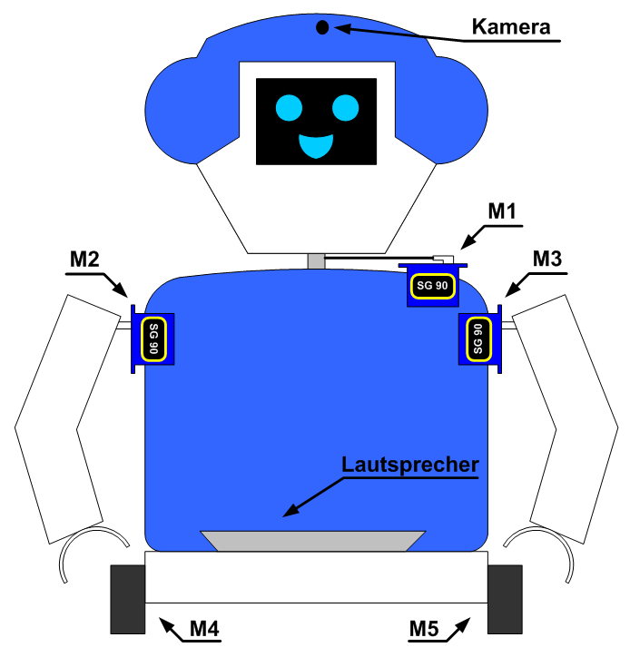
Dieser Roboter enthält zwei Motoren, die ihm das Gehen ermöglichen, sowie jeweils einen Motor für jede Hand und einen Motor für den Kopf, um diese bewegen zu können.
Elektrische Steuerung :
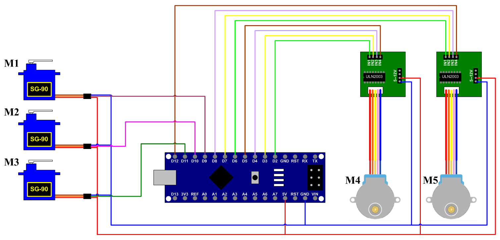
Für das Gehen wurden zwei Schrittmotoren verwendet sowie ein Servomotor für die Hände und den Kopf. Zur Steuerung dieser Motoren wurde ein Arduino Nano eingesetzt.
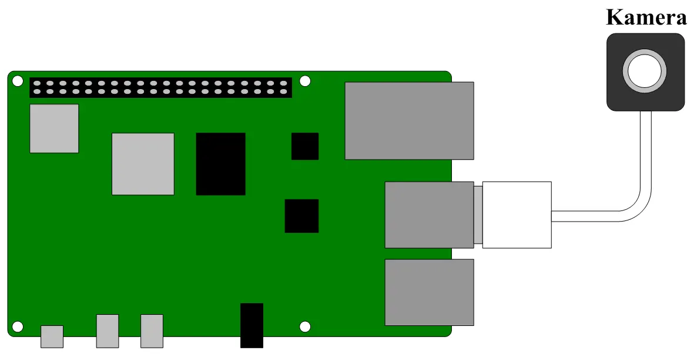
Der Hauptcontroller dieses Roboters ist ein Raspberry Pi, an den eine USB Kamera angeschlossen wurde, damit er sehen und Gegenstände erkennen kann. Er kann weiterentwickelt werden, um auch Personen zu erkennen.
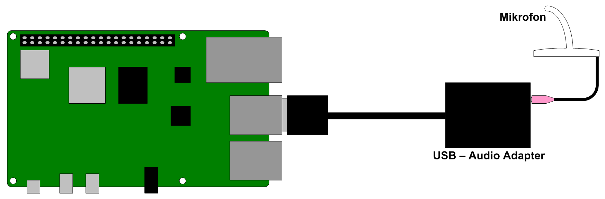
Der Raspberry Pi verfügt über keinen analogen Eingang, weshalb das Mikrofon an einen Adapter angeschlossen wurde, der das analoge Signal über einen USB Anschluss in ein digitales Signal umwandelt.
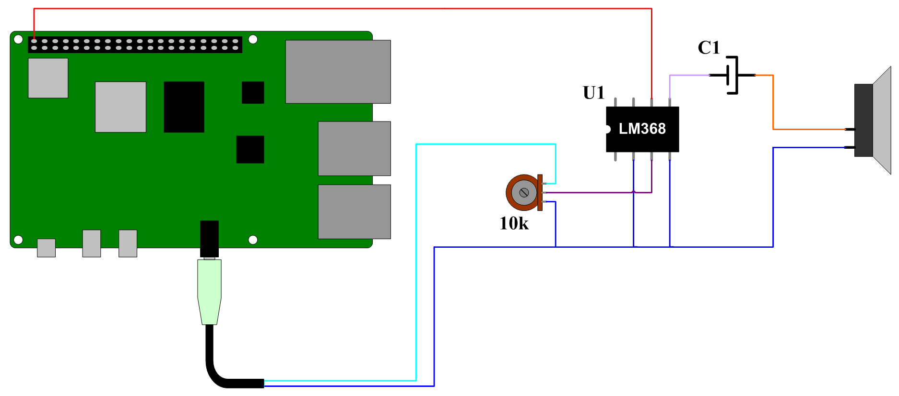
Für die Tonausgabe verfügt der Raspberry Pi über einen Anschluss, jedoch ist das Signal schwach. Daher wurde ein Audioverstärker durch das Hinzufügen eines Verstärkers vom Typ LM358 sowie eines Potentiometers zur Erhöhung und Verringerung der Lautstärke gebaut.
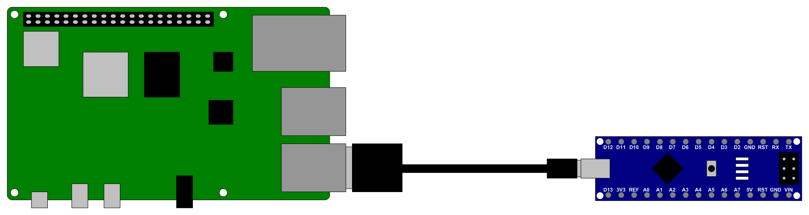
Der Raspberry Pi und der Arduino sind über ein USB Kabel verbunden, um die Stromversorgung zu gewährleisten und gleichzeitig dem Raspberry Pi zu ermöglichen, Befehle an den Arduino zu senden, welcher seinerseits die Motoren steuert. Die Motoren wurden vom Raspberry Pi getrennt, um die Belastung desselben zu verringern, da er die Bild und Tonverarbeitung durchführt.
Intelligentes Haus :
Projektüberblick :
Dieses Smart Home wird vollständig auf drei verschiedene Arten gesteuert. Das Haus umfasst Innenbeleuchtung, Aussenbeleuchtung, eine Tür, ein Fenster, einen Deckenventilator sowie ein fortschrittliches Bewässerungssystem.
- Die erste Methode erfolgt über eine Benutzeroberfläche mit einem Bildschirm und Tasten zum Navigieren zwischen den Hausbereichen und zur Auswahl der zu steuerten Komponente, wobei ein Ein Schalter und ein Aus Schalter vorhanden sind.
- Die zweite Methode ist die Fernsteuerung über WLAN und eine Benutzeroberfläche auf dem Smartphone oder Computer, womit alles gesteuert werden kann.
- Die dritte Methode besteht darin, dass das Haus vollständig automatisiert wird, wobei Tür, Beleuchtung, Ventilator und sogar die Wasserpumpe mithilfe von Sensoren gesteuert werden.
Mechanischer Aufbau :
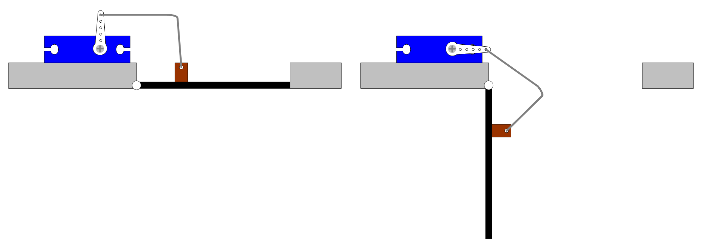
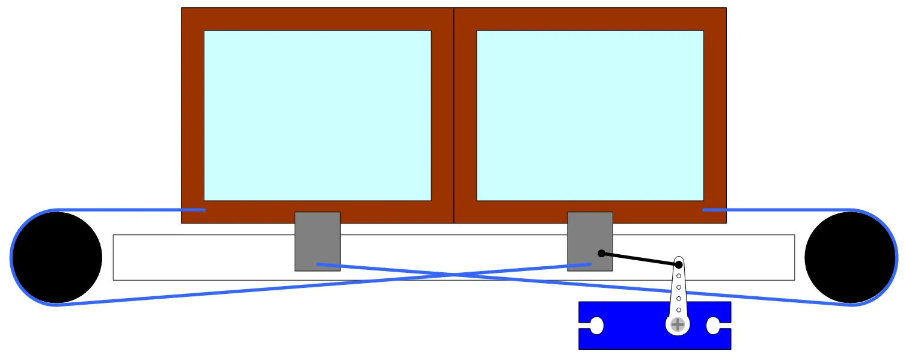
Zum Öffnen und Schließen der Tür wurde ein Servomotor und ein einfaches System verwendet. Auch das Fenster benötigt einen Servomotor sowie ein komplexes System zur Umwandlung der Drehbewegung des Motors in eine entgegengesetzte Gleitbewegung über Drähte, wodurch sich die beiden Fensterteile in entgegengesetzte Richtungen bewegen.
Elektrische Steuerung :
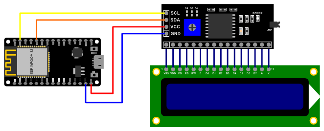
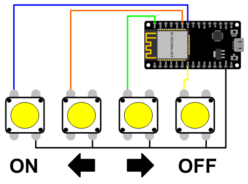
Die manuelle Steuerung erfolgt über einen Bildschirm und Tasten zum Navigieren zwischen den Hausbereichen und zur Steuerung von allem, zusätzlich zur Anzeige von Informationen wie Temperatur, Bodenfeuchtigkeit und dem Füllstand des Wassertanks. Das Gehirn für all diese Befehle ist ein ESP32 Board, jedoch verfügt es über eine begrenzte Anzahl von Ein und Ausgängen. Daher wurde anstelle der Verwendung von vielen Kabeln für den Betrieb des Bildschirms ein I2C Modul hinzugefügt, das nur ein Datenkabel und ein Taktkabel benötigt, wodurch die Steuerung des Bildschirms über das I2C Protokoll erfolgt.
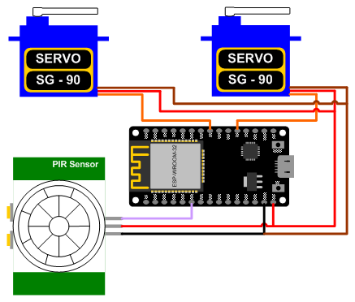
Sowohl die Tür als auch das Fenster benötigen jeweils einen Servomotor, jedoch wurde ein PIR Sensor hinzugefügt, der die Veränderung der Infrarotstrahlung von jedem lebendigen Körper wie einem Menschen erfasst, um das automatische Öffnen der Tür zu ermöglichen, sobald eine Person daran vorbeigeht. Ausserdem kann seine Empfindlichkeit so eingestellt werden, dass er aus der Nähe oder aus der Ferne reagiert, und die Zeit, in der die Tür vor dem automatischen Schliessen offen bleibt, lässt sich ebenfalls steuern.
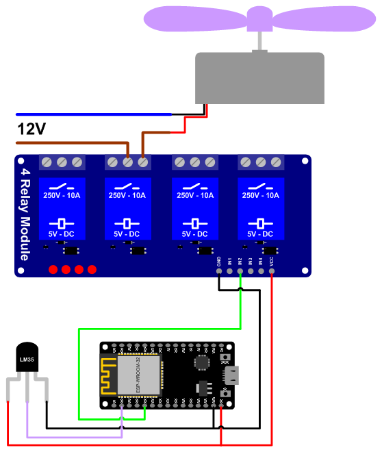
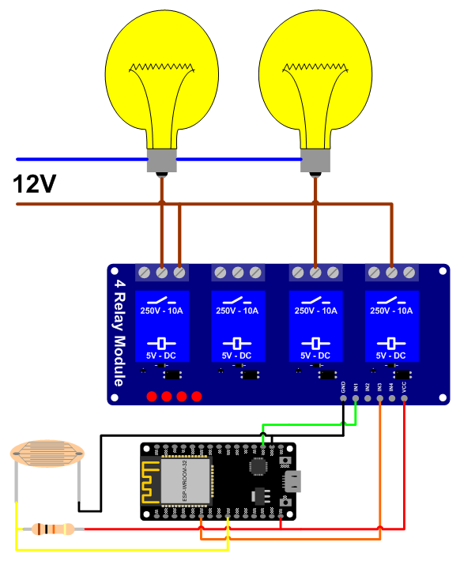
Sowohl die Innenbeleuchtung als auch die Aussenbeleuchtung verfügen über eine Glühlampe mit einer Betriebsspannung von zwölf Volt, und auch der Ventilator arbeitet mit zwölf Volt. Da das ESP32 Board weder diese Spannung noch den für ihren Betrieb geeigneten Strom bereitstellen kann, wurde ein Relais verwendet, um die Hochspannung mit einer schwachen Spannung zu steuern, zusätzlich zur optischen Trennung, da das Relaismodul einen Optokoppler enthält.
Für die automatische Steuerung des Einschaltens der Beleuchtung wird ein LDR Sensor benötigt, dessen Widerstandswert sich je nach der Intensität des darauf fallenden Lichts verändert. Für den Ventilator wurde ein Temperatursensor installiert, sodass sich der Ventilator einschaltet, wenn die Temperatur ansteigt und einen bestimmten Grenzwert überschreitet.
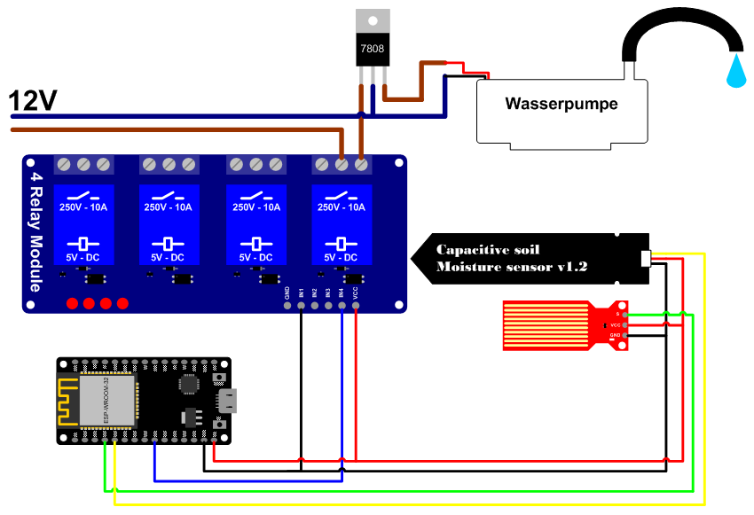
Der Pumpenmotor arbeitet mit einer Spannung von acht Volt, und der Leistungsteil des Hauses wird mit zwölf Volt versorgt, weshalb die Notwendigkeit bestand, einen Spannungsregler mit einem Wert von acht Volt hinzuzufügen. Bei dieser Art von Tauchpumpen trat ein grosses Problem auf, das in ihrer geringen Qualität liegt, da beim Einsetzen in das Wasser sofort Wasser in den Motor eindringt und dieser durchbrennt. Daher wurde ein anderer Motor beschafft und eine lange Welle zwischen dem Motor und der Pumpe konstruiert, wodurch sich nur die Pumpe unter Wasser befindet, während der Motor ferngehalten wird.
Durch die Verwendung eines kapazitiven Sensors, der die Feuchtigkeit im Boden erfasst, kann die Pumpe so gesteuert werden, dass sie bei Trockenheit des Bodens arbeitet und bei steigender Feuchtigkeit automatisch stoppt, zusätzlich zum Hinzufügen eines Sensors, der die Wassermenge im Tank misst.
OTTO-Roboter :
Projektüberblick :
Das Projekt ist ein Robot, der auf zwei Beinen gehen und Hindernisse ausweichen kann.
Mechanischer Aufbau :
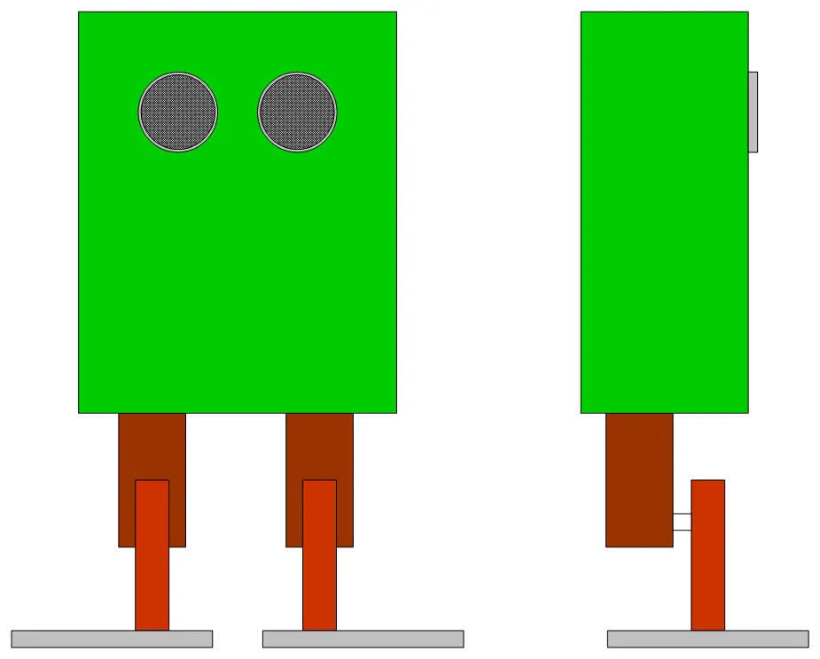
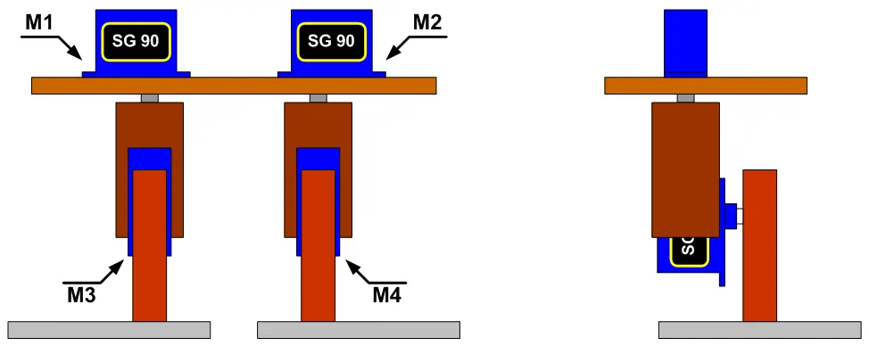
Der Roboter bewegt seine Beine mithilfe von vier Servomotoren, wobei auf jeden Fuss zwei Motoren entfallen, wodurch er gehen und tanzen kann.
Elektrische Steuerung :
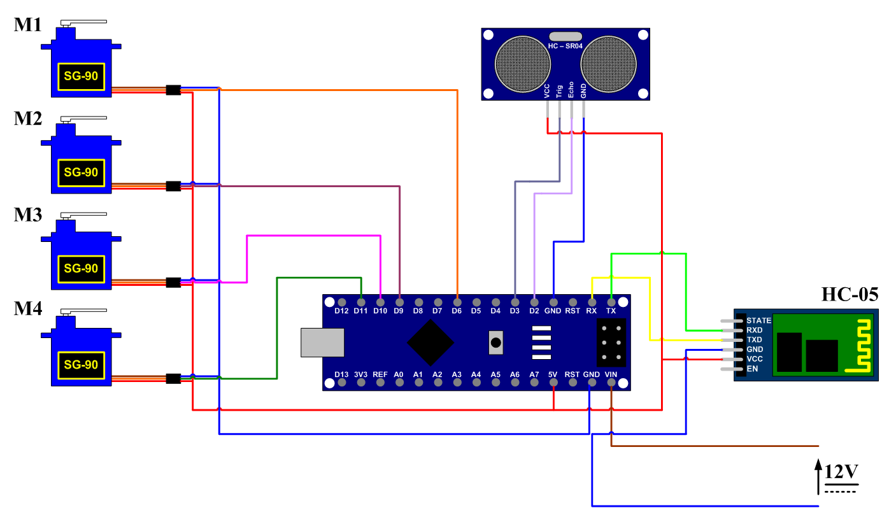
Das Gehirn dieses Roboters ist ein Arduino Nano Board, das vier Motoren steuert. Der Roboter kann mithilfe eines Ultraschallsensors Hindernissen ausweichen, und er wird aus der Ferne über ein Mobiltelefon mittels Bluetooth gesteuert.
Selbstbalancierender Roboter :
Projektüberblick :
Es wurde eine kleine Anpassung am interaktiven Roboter vorgenommen, um seine Hand nach oben und unten zu bewegen und somit einen Ball entsprechend dem gewünschten Abstand auszubalancieren.
Mechanischer Aufbau :
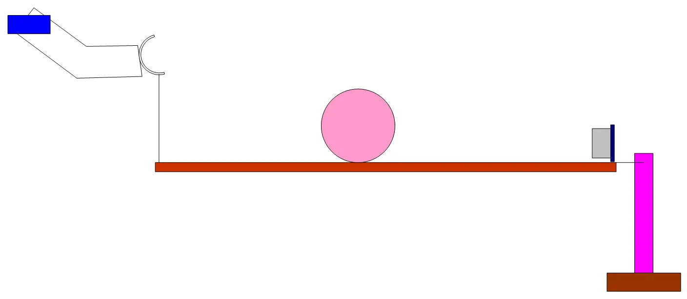
Das Projekt besteht aus einer Roboterhand, die sich auf und ab bewegt und dabei eine Platte mit einem Ball darauf bewegt, welcher einem Ultraschallsensor gegenübersteht, der den Abstand präzise misst.
Elektrische Steuerung :
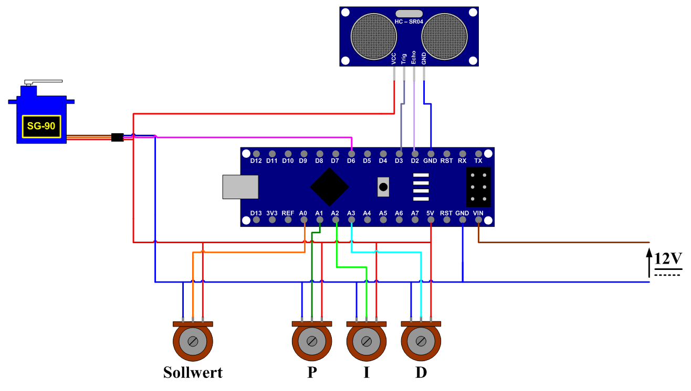
Der Sensor sendet den tatsächlichen Abstand an den Arduino, welcher diesen mit dem über den variablen Widerstand ausgewählten Abstand vergleicht. Mithilfe eines PID Reglers kann der Roboter den Ball schnell, präzise und stabil ausbalancieren.
Intelligente Hand :
Projektüberblick :
Das Projekt besteht aus einer Kamera, die die Hand sehen und deren Bewegung verstehen kann, um eine Plastikhand entsprechend der Handbewegung vor der Kamera zu bewegen.
Mechanischer Aufbau :
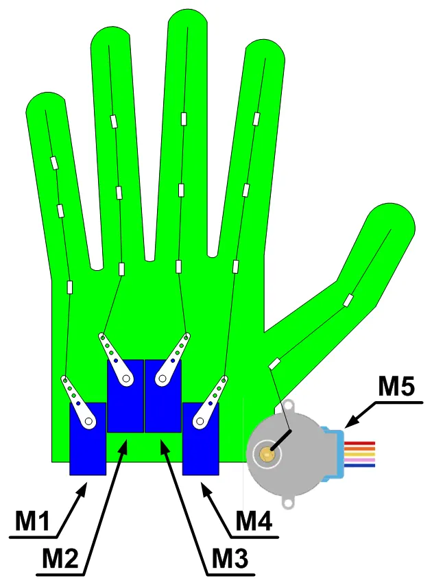
Die Hand enthält vier Servomotoren und einen Schrittmotor sowie ein Drahtsystem für jeden Finger, sodass jeder Finger einzeln bewegt werden kann. Die Verwendung eines Schrittsmotors war erforderlich, da kein fünfter Servomotor verfügbar war.
Elektrische Steuerung :
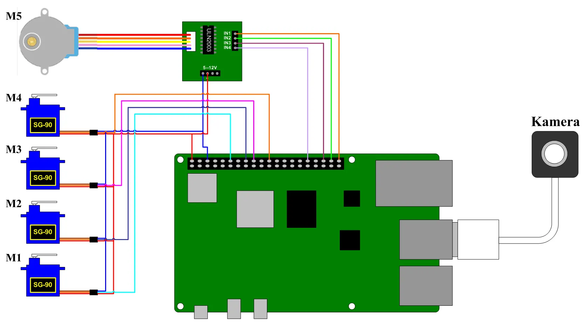
Das Gehirn dieses Projekts ist ein Raspberry Pi Board, wobei eine USB Kamera, vier Servomotoren und ein Schrittmotor mit seinem dazugehörigen Treiber des Typs ULN2003 angeschlossen wurden.
Roboterarm :
Projektüberblick :
Das Projekt ist ein Roboterarm, der am Ende einen Greifer zur Aufnahme von Gegenständen und zu deren Platzierung an anderen Orten besitzt. Der Roboter kann auf verschiedene Weisen gesteuert werden, darunter die Bedienung über physische Tasten, die Fernsteuerung über ein Mobiltelefon oder seine Programmierung, damit er automatisch arbeitet und bestimmte Bewegungen ausführt.
Mechanischer Aufbau :
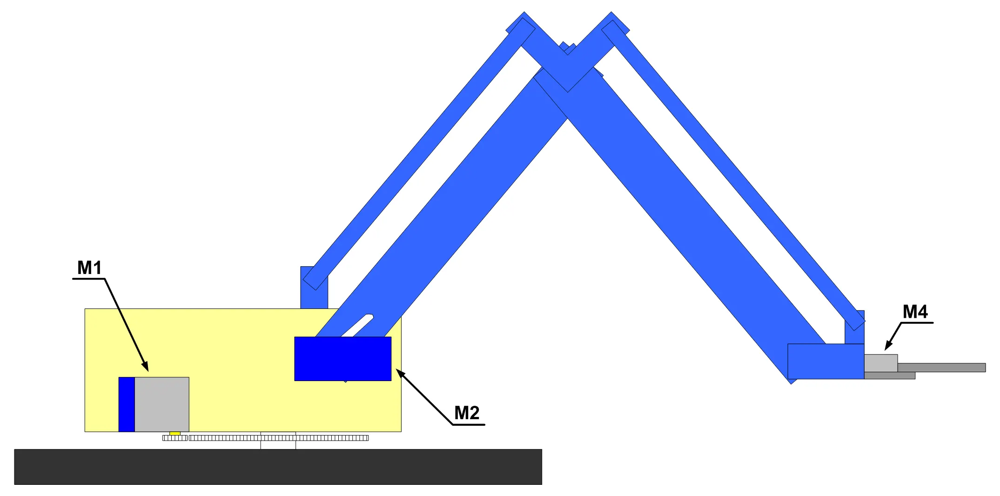
Der Roboter enthält vier Motoren, darunter einen Schrittmotor, zwei Servomotoren und einen Gleichstrommotor. Der Roboter besteht zu hundert Prozent handgefertigt aus Holz, unter Hinzufügung eines Systems, das den Greifer unabhängig von der Aufwärtsbewegung und Abwärtsbewegung des Arms stets parallel zum Boden hält.
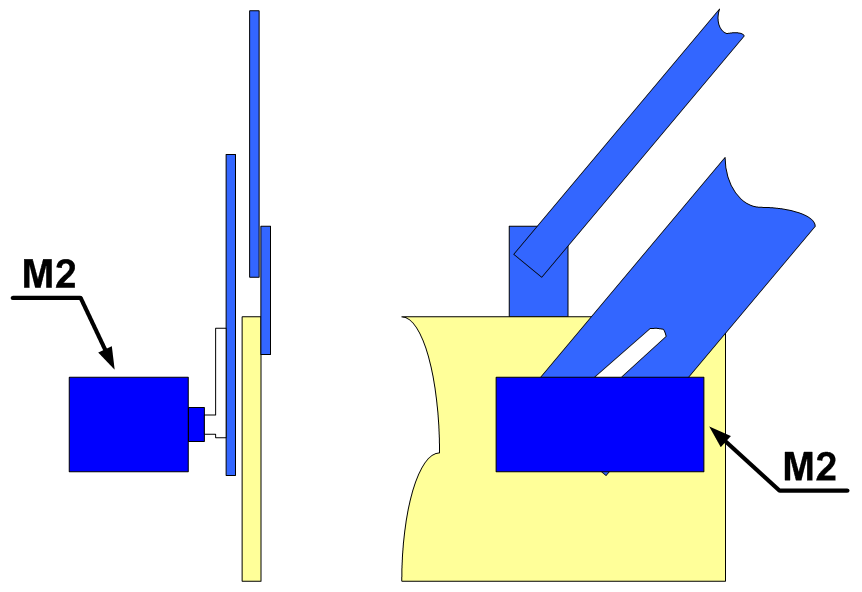
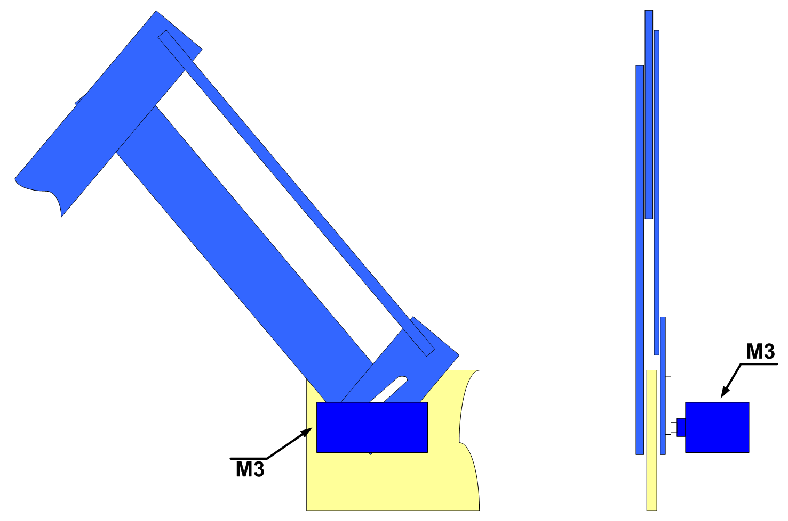
Der gesamte Arm kann sich mithilfe des Servomotors M2 nach oben und unten bewegen, während sich nur die zweite Hälfte mithilfe des Servomotors M3 bewegen kann.
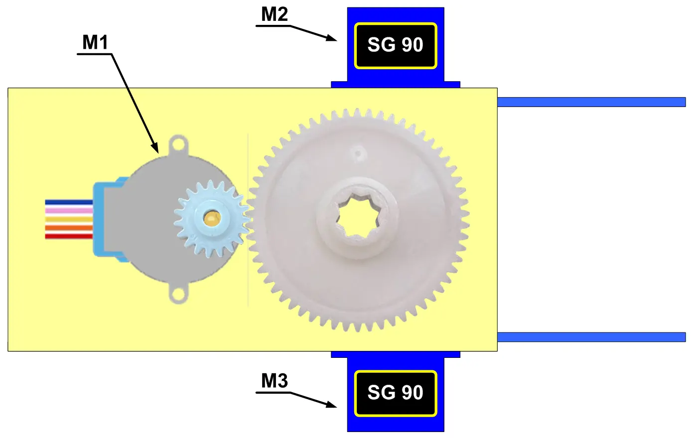
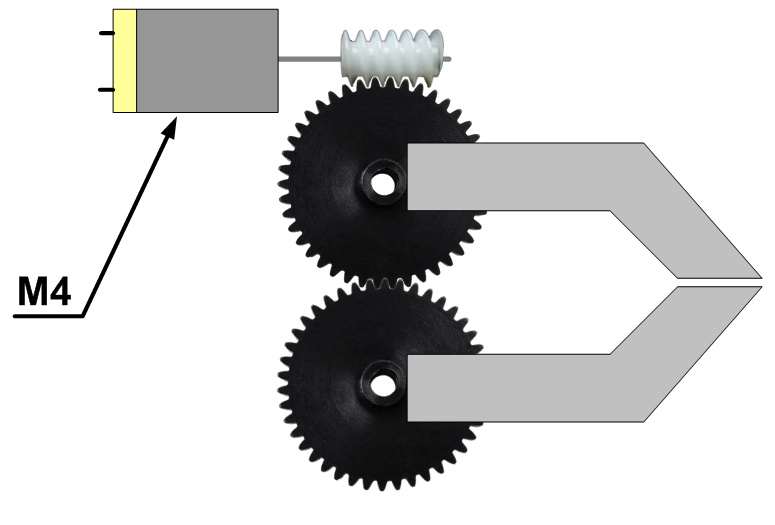
Zur Bewegung des gesamten Roboters nach rechts und links wird ein drehmomentstarker Schrittmotor mit geringer Geschwindigkeit und einem Getriebesystem eingesetzt. Zum Öffnen und Schließen des Greifers wurden ein Gleichstrommotor und ein Getriebesystem verwendet, das eine Schnecke enthält, wodurch sich der Greifer mit hoher Präzision öffnen und schließen lässt.
Elektrische Steuerung :
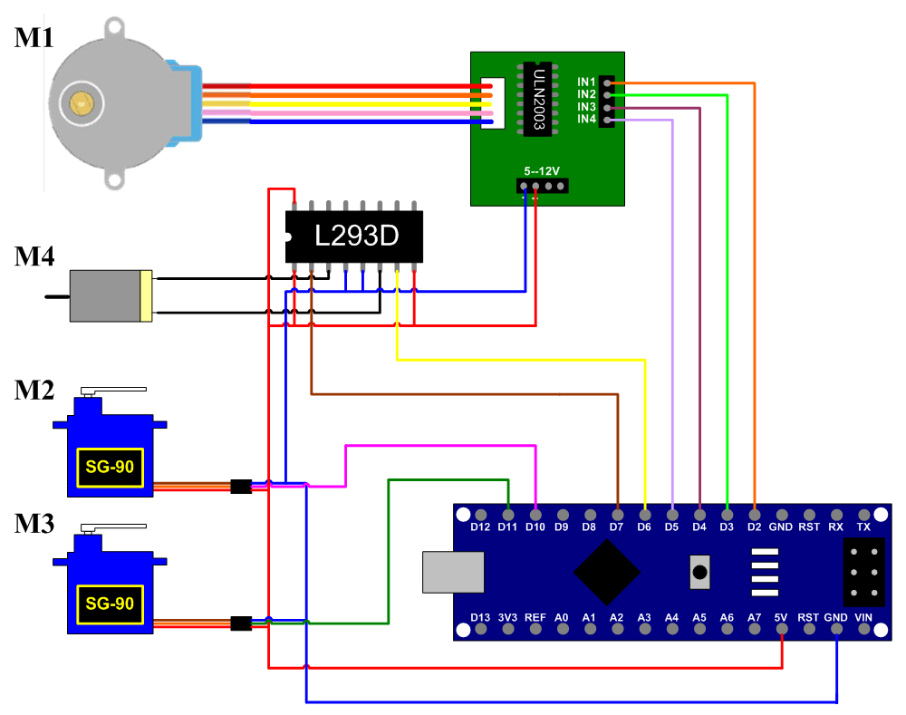
Zur Steuerung der vier Motoren dient ein Arduino Nano Board als Steuereinheit. Die beiden Servomotoren M2 und M3 benötigen jeweils nur ein Steuersignal per Pulsweitenmodulation, während der Schrittmotor M1 einen Treiber wie den ULN2003 erfordert, und für den Gleichstrommotor M4 wird eine L293D Treiberschaltung benötigt.
Sortiersystem :
Projektüberblick :
Das Projekt ist ein Roboter, der Farben mithilfe einer Kamera erkennen kann. Der Roboter verfügt über einen Arm und einen Greifer, die sich nach rechts und links sowie nach oben und unten bewegen können, zusätzlich zum Öffnen und Schließen des Greifers, um Teile aufzunehmen und sie je nach Farbe am richtigen Ort zu platzieren.
Mechanischer Aufbau :
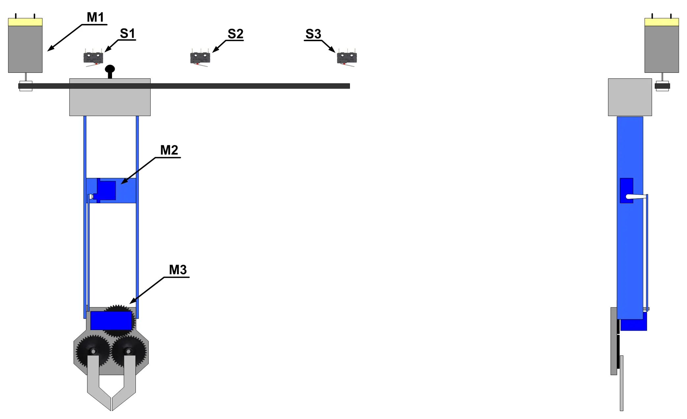
Zur Bewegung des Systems nach rechts und links wird ein Gleichstrommotor mit einem Riemenscheibensystem verwendet. Da der Gleichstrommotor seine genaue Position im Gegensatz zum Schrittmotor nicht von Natur aus bestimmen kann und um das Projekt zu vereinfachen sowie ohne Drehgeber auszukommen, wurden drei Sensoren installiert, zwei zur Erkennung der Farbbereiche und ein weiterer zur Bestimmung des Ablageortes der Teile. Die Sensoren wurden anstelle von Drehgebern gewählt, da die Aufnahme und Ablageorte der Teile fest und unveränderlich sind.
Elektrische Steuerung :
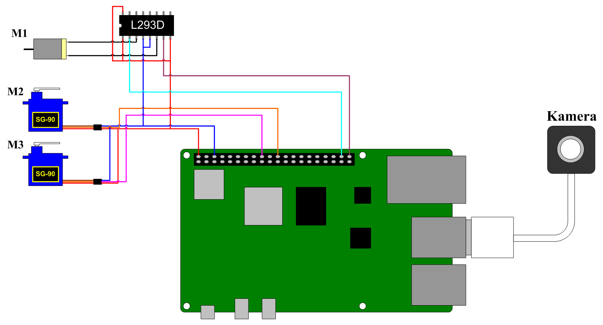
Zur Steuerung des Roboters werden ein Raspberry Pi und eine USB Kamera verwendet. Zur Regelung des Anhebens und Absenkens des Greifers wird ein Servomotor eingesetzt, ebenso für das Öffnen und Schließen, während der Gleichstrommotor zur Bewegung des gesamten Arms eine L293D Schaltung benötigt. Die Sensoren sind an digitale Eingänge angeschlossen und wirken als Taster, bei Betätigung durch den Arm wird eine Spannung von 3,3 Volt an den Raspberry Pi gesendet. Da der Signalwert im unbetätigten Zustand unbestimmt ist, wurde ein Widerstand zur Masse eingesetzt, um den Pin mit null Volt zu verbinden.